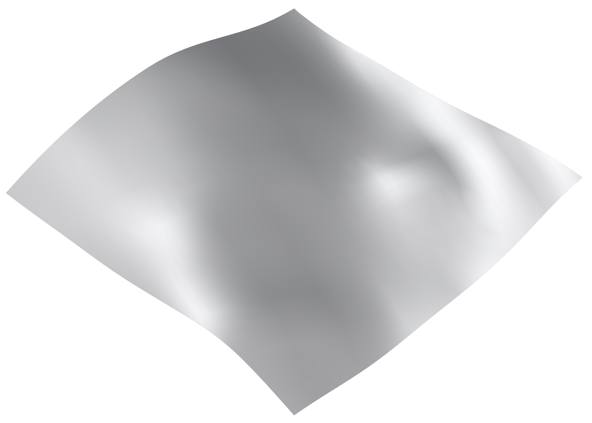
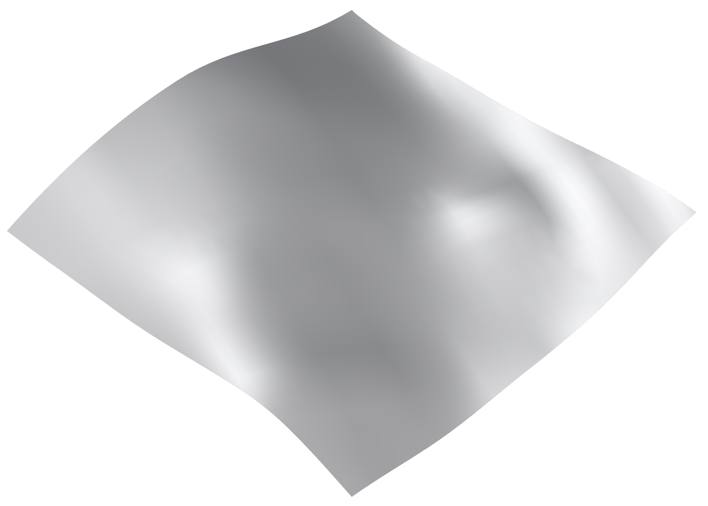
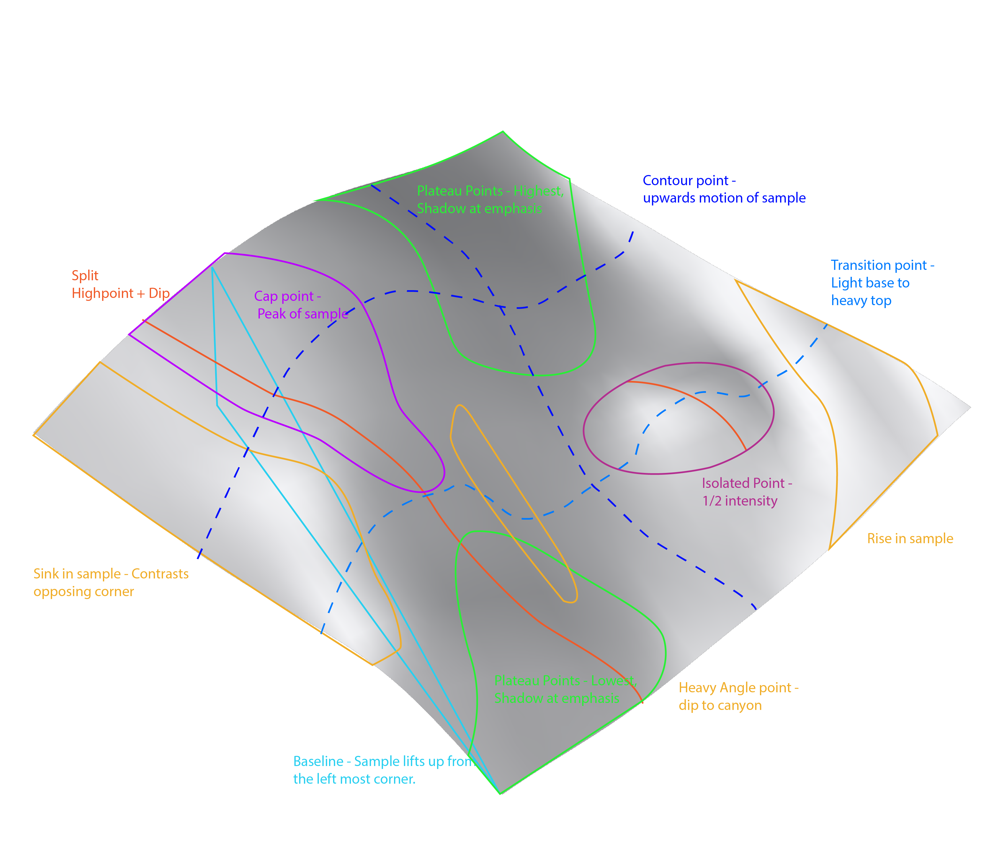
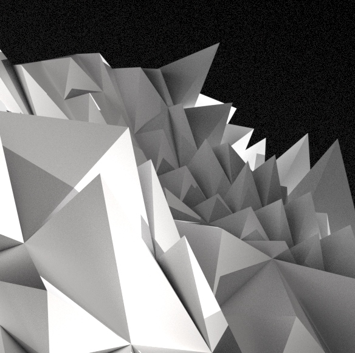
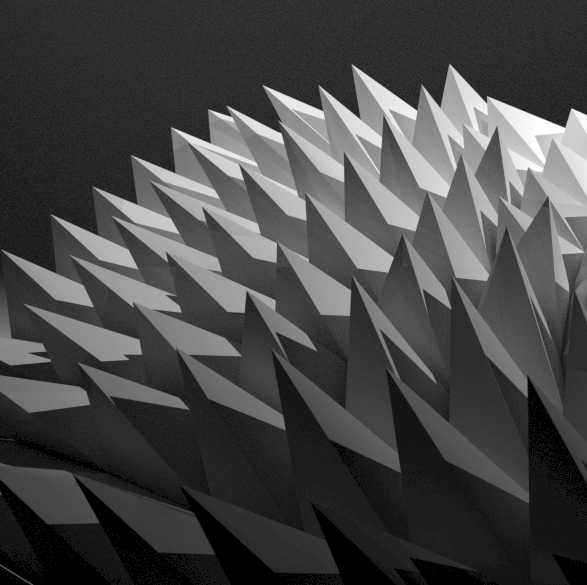
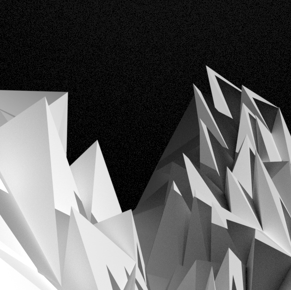
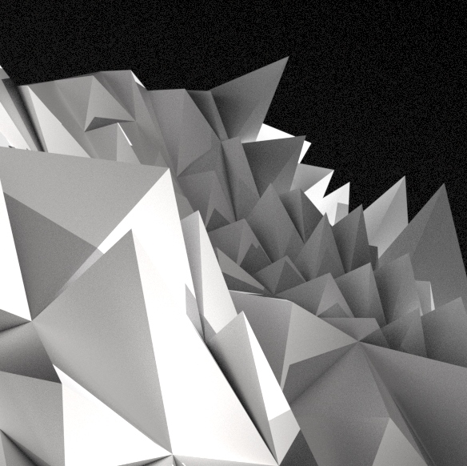
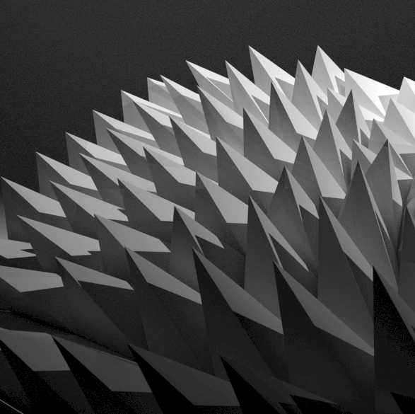
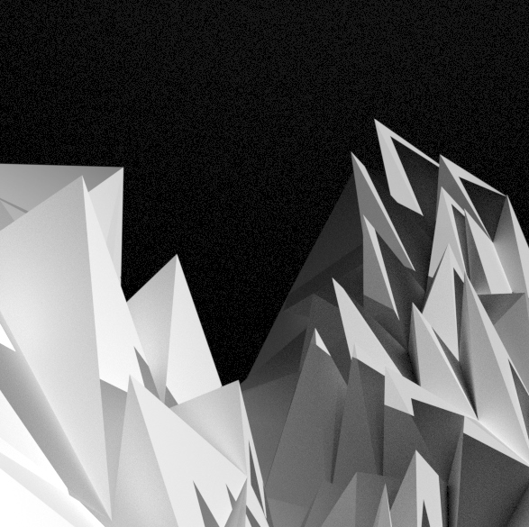

Surface Vs Pattern
Taking a technical, iteration-based approach in Module Two – Surface Vs Pattern, this project encouraged taking a mathematical, command-based attitude to development, creating a sample piece that considers multiple dimensions of object form and structure. Emphasising a divisionary process, I focused on creating minute details to represent the behaviour of the fabric and form of my Tasmanian terrain sample within my outputs.
Origin
 

Undertaking this project, my development encouraged subtle changes of direction, force and pattern to provide strong movement and textual quality between the flat and formed surfaces. I was encapsulated by the presence of gravity and the figure of Madonna within the Origin artwork by Cima da Conegliano, using it to inform my practice to Investigate the presence of the model and its context through questioning: What makes the model behave this way? What forms the model physically and conceptually?
Project


 






As a movement upward from Assessment 1, I strove to take the flaws identified within my past work and reframe them to be encouraged and refined within this work. My focus on the gravitational context within this piece was encouraged by my desire to improve upon the feedback I received. playing on both resilience and an eye for detail to compose my final product. This project required the management of multiple outputs to create 3D, 2D and construction components to showcase the full scope of work. I was able to further improve my management and consistency of outputs within effective time.